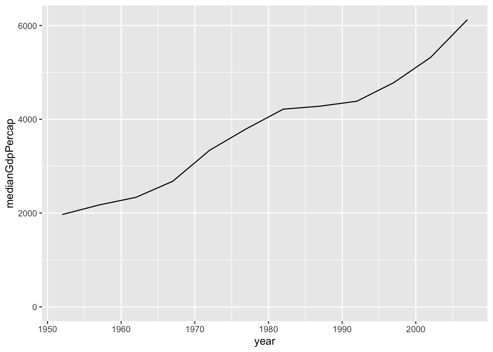
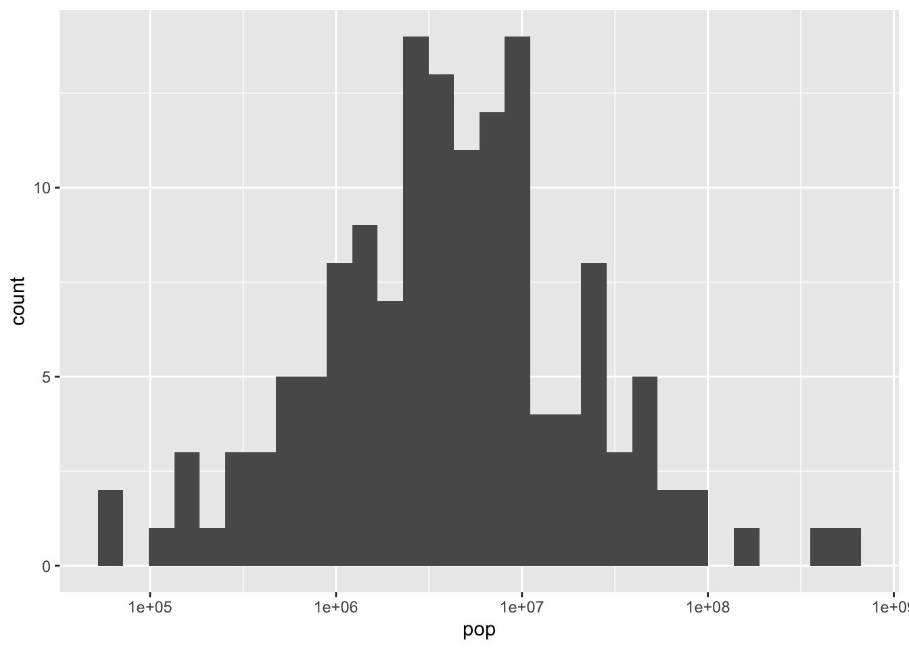
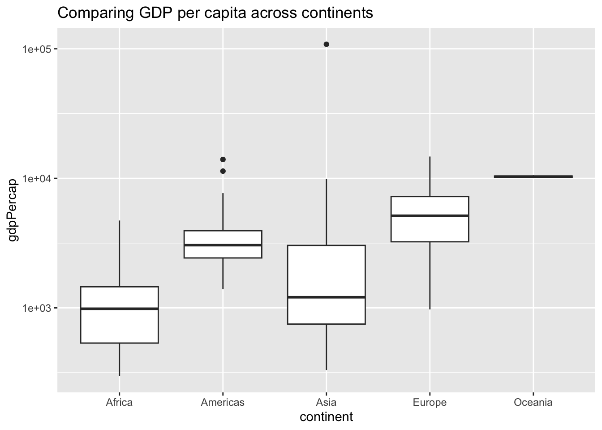

Types of visualizations
The graphs you’ve made so far in this course have all been scatter plots, like this one.
These are useful for comparing two variables, such as GDP per capita and life expectancy, with each point representing one observation. But there are many other types of graphs you can make with ggplot2, each of which is useful for visualizing a particular type of data.
In this chapter, you’ll learn how to create line plots, bar plots, histograms, and boxplots. You’ll see how each plot requires different methods of data manipulation and preparation, and you’ll understand how each of these plot types plays a different role in data analysis.
Line plots
You’ll start by making a line plot, for visualizing a change over time.
In the last chapter, you created a plot like this to show the mean life expectancy in each continent in each year.

You can get a sense of the trends from this plot. But it’s a bit easier to understand as a line plot, where the observations within each continent are connected. This makes it clearer that what we care about is the upward or downward trend over time.
Line plots
Exercise: Visualizing median GDP per capita over time
A line plot is useful for visualizing trends over time. In this exercise, you’ll examine how the median GDP per capita has changed over time.
Instructions
- Use
group_by()andsummarize()to find the median GDP per capita within each year, calling the output columnmedianGdpPercap. Use the assignment operator=to save it to a dataset calledby_year.
# Summarize the median gdpPercap by year, then save it as by_year
by_year = gapminder%>%
group_by(year)%>%
summarize(medianGdpPercap = median(gdpPercap))
by_year# A tibble: 12 × 2
year medianGdpPercap
<int> <dbl>
1 1952 1969.
2 1957 2173.
3 1962 2335.
4 1967 2678.
5 1972 3339.
6 1977 3799.
7 1982 4216.
8 1987 4280.
9 1992 4386.
10 1997 4782.
11 2002 5320.
12 2007 6124.- Use the
by_yeardataset to create a line plot showing the change in median GDP per capita over time. Be sure to use expand_limits(y = 0) to include 0 on the y-axis.

Answer
# Summarize the median gdpPercap by year, then save it as by_year
by_year = gapminder%>%
group_by(year)%>%
summarize(medianGdpPercap = median(gdpPercap))
# Create a line plot showing the change in medianGdpPercap over time
ggplot(by_year, aes(x = year, y = medianGdpPercap))+
geom_line()+
expand_limits(y=0)
Exercise: Visualizing median GDP per capita by continent over time
In the last exercise you used a line plot to visualize the increase in median GDP per capita over time. Now you’ll examine the change within each continent.
Instructions
- Use
group_by()andsummarize()to find the median GDP per capita within each year and continent, calling the output column medianGdpPercap. Use the assignment operator=to save it to a dataset calledby_year_continent.
# Summarize the median gdpPercap by year & continent, save as by_year_continent
suppressMessages({by_year_continent = gapminder%>%
group_by(year,continent)%>%
summarize(medianGdpPercap = median(gdpPercap))})
by_year_continent# A tibble: 60 × 3
# Groups: year [12]
year continent medianGdpPercap
<int> <fct> <dbl>
1 1952 Africa 987.
2 1952 Americas 3048.
3 1952 Asia 1207.
4 1952 Europe 5142.
5 1952 Oceania 10298.
6 1957 Africa 1024.
7 1957 Americas 3781.
8 1957 Asia 1548.
9 1957 Europe 6067.
10 1957 Oceania 11599.
# ℹ 50 more rows- Use the
by_year_continentdataset to create a line plot showing the change in median GDP per capita over time, with color representing continent. Be sure to use expand_limits(y = 0) to include 0 on the y-axis.
Answer
# Summarize the median gdpPercap by year & continent, save as by_year_continent
by_year_continent = gapminder%>%
group_by(year,continent)%>%
summarize(medianGdpPercap = median(gdpPercap))`summarise()` has grouped output by 'year'. You can override using the
`.groups` argument.# Create a line plot showing the change in medianGdpPercap by continent over time
ggplot(by_year_continent, aes(x = year, y = medianGdpPercap,color = continent))+
geom_line()+
expand_limits(y=0)
Bar plots
The next kind of plot you’ll learn to make is a bar plot. Bar plots are useful for comparing values across discrete categories, such as continents.
In the last chapter, you learned to calculate summarized values within groups. For example, this code finds the average life expectancy within each continent in the year 2007. That creates a table that looks like this, with one observation for each continent.
by_continent <- gapminder %>%
filter(year == 2007) %>%
group_by(continent) %>%
summarize(meanLifeExp = mean(lifeExp))
by_continent# A tibble: 5 × 2
continent meanLifeExp
<fct> <dbl>
1 Africa 54.8
2 Americas 73.6
3 Asia 70.7
4 Europe 77.6
5 Oceania 80.7Bar plots
Exercise: Visualizing median GDP per capita by continent
A bar plot is useful for visualizing summary statistics, such as the median GDP in each continent.
Instructions
- Use
group_by()andsummarize()to find the median GDP per capita within each continent in the year 1952, calling the output columnmedianGdpPercap. - Use the assignment operator
=to save it to a dataset calledby_continent.
# A tibble: 5 × 2
continent medianGdpPercap
<fct> <dbl>
1 Africa 987.
2 Americas 3048.
3 Asia 1207.
4 Europe 5142.
5 Oceania 10298.- Use the by_continent dataset to create a bar plot showing the median GDP per capita in each continent.
Answer
library(dplyr)
library(ggplot2)
# Summarize the median gdpPercap by continent in 1952
by_continent = gapminder%>%
filter(year == 1952)%>%
group_by(continent)%>%
summarize(medianGdpPercap = median(gdpPercap))
# Create a bar plot showing medianGdp by continent
ggplot(by_continent,aes(x = continent,y = medianGdpPercap))+
geom_col()
Exercise: Visualizing GDP per capita by country in Oceania
You’ve created a plot where each bar represents one continent, showing the median GDP per capita for each. But the x-axis of the bar plot doesn’t have to be the continent: you can instead create a bar plot where each bar represents a country.
In this exercise, you’ll create a bar plot comparing the GDP per capita between the two countries in the Oceania continent (Australia and New Zealand).
Instructions
- Filter for observations in the Oceania continent in the year 1952. Save this as
oceania_1952.
# A tibble: 2 × 6
country continent year lifeExp pop gdpPercap
<fct> <fct> <int> <dbl> <int> <dbl>
1 Australia Oceania 1952 69.1 8691212 10040.
2 New Zealand Oceania 1952 69.4 1994794 10557.- Use the
oceania_1952dataset to create a bar plot, with country on the x-axis andgdpPercapon the y-axis.

Answer
library(gapminder)
library(dplyr)
library(ggplot2)
# Filter for observations in the Oceania continent in 1952
oceania_1952 = gapminder%>%
filter(year == 1952, continent == 'Oceania')
# Create a bar plot of gdpPercap by country
ggplot(oceania_1952, aes(x = country, y = gdpPercap))+
geom_col()
Histograms
Each kind of graph offers a different way to investigate your data. So far we’ve been looking at relationships between two or more variables. But we can instead investigate one dimension of the data at a time, using a histogram.
Histograms
Histograms
`stat_bin()` using `bins = 30`. Pick better value with `binwidth`.
A histogram shows a distribution. In this case, it’s the distribution of life expectancy across countries in the year 2007. Every bar represents a bin of life expectancies, and the height represents how many countries fall into that bin. This lets you get a sense of the distribution based on the histogram’s shape. We can see that most countries have a life expectancy between 70 to 80 years, but that another set of countries have life expectancies between 40 and 65.
ggplot(gapminder_2007, aes(x = lifeExp)) +
geom_histogram()A histogram is created with geom_histogram(). It has only one aesthetic: the x-axis, the variable whose distribution you are examining.
Adjusting bin width
Log x-axis
Exercise: Visualizing population
A histogram is useful for examining the distribution of a numeric variable. In this exercise, you’ll create a histogram showing the distribution of country populations (by millions) in the year 1952.
Code for generating this dataset, gapminder_1952, is provided.
gapminder_1952 = gapminder %>%
filter(year == 1952) %>%
mutate(pop_by_mil = pop / 1000000)
Instructions
- Use the gapminder_1952 dataset to create a histogram of country population (pop_by_mil) in the year 1952.
- Inside the histogram geom, set the number of bins to 50.
Answer
library(gapminder)
library(dplyr)
library(ggplot2)
gapminder_1952 <- gapminder %>%
filter(year == 1952) %>%
mutate(pop_by_mil = pop / 1000000)
# Create a histogram of population (pop_by_mil)
ggplot(gapminder_1952,aes(x = pop_by_mil))+
geom_histogram(bins=50)
Exercise: Visualizing population with x-axis on a log scale
In the last exercise you created a histogram of populations across countries. You might have noticed that there were several countries with a much higher population than others, which causes the distribution to be very skewed, with most of the distribution crammed into a small part of the graph. (Consider that it’s hard to tell the median or the minimum population from that histogram).
To make the histogram more informative, you can try putting the x-axis on a log scale.
Instructions
gapminder_1952 <- gapminder %>%
filter(year == 1952) %>%
mutate(pop_by_mil = pop / 1000000)- Use the
gapminder_1952dataset (code is provided) to create a histogram of country population (pop) in the year 1952, putting the x-axis on a log scale withscale_x_log10().
Answer
gapminder_1952 <- gapminder %>%
filter(year == 1952)
# Create a histogram of population (pop), with x on a log scale
ggplot(gapminder_1952,aes(x = pop))+
geom_histogram()+
scale_x_log10()`stat_bin()` using `bins = 30`. Pick better value with `binwidth`.
Boxplots
In this final lesson, you’ll learn how to make one more type of graph: a box plot. Recall that we used a histogram when we wanted to examine the distribution of one variable, such as life expectancy, across all countries.
`stat_bin()` using `bins = 30`. Pick better value with `binwidth`.
Notice that a histogram combines all the life expectancies across all continents, without distinguishing them. But what if your goal is to compare the distribution of life expectancies among continents?
Box plots
Histogram vs box plot
Exercise: Comparing GDP per capita across continents
A boxplot is useful for comparing a distribution of values across several groups. In this exercise, you’ll examine the distribution of GDP per capita by continent. Since GDP per capita varies across several orders of magnitude, you’ll need to put the y-axis on a log scale.
Instructions
- Use the gapminder_1952 dataset (code is provided) to create a boxplot comparing GDP per capita (gdpPercap) among continents.
- Put the y-axis on a log scale with
scale_y_log10().
Answer
gapminder_1952 <- gapminder %>%
filter(year == 1952)
# Create a boxplot comparing gdpPercap among continents
ggplot(gapminder_1952, aes(x = continent, y= gdpPercap))+
geom_boxplot()+
scale_y_log10()Exercise: Adding a title to your graph
There are many other options for customizing a ggplot2 graph. You can also learn about them from online resources, which is an important skill to develop.
As the final exercise in this chapter, you’ll practice looking up ggplot2 instructions by completing a task we haven’t shown you how to do.
Instructions
- Add a title to the graph: Comparing GDP per capita across continents. Use a search engine, such as Google or Bing, to learn how to do so.
Answer
gapminder_1952 <- gapminder %>%
filter(year == 1952)
# Add a title to this graph: "Comparing GDP per capita across continents"
ggplot(gapminder_1952, aes(x = continent, y = gdpPercap)) +
geom_boxplot() +
scale_y_log10()+
ggtitle("Comparing GDP per capita across continents")